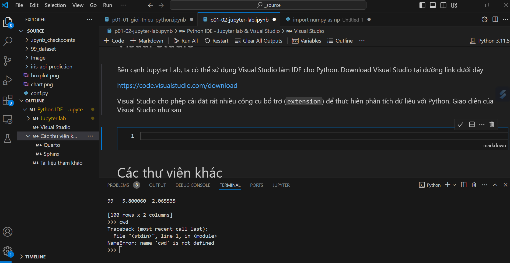
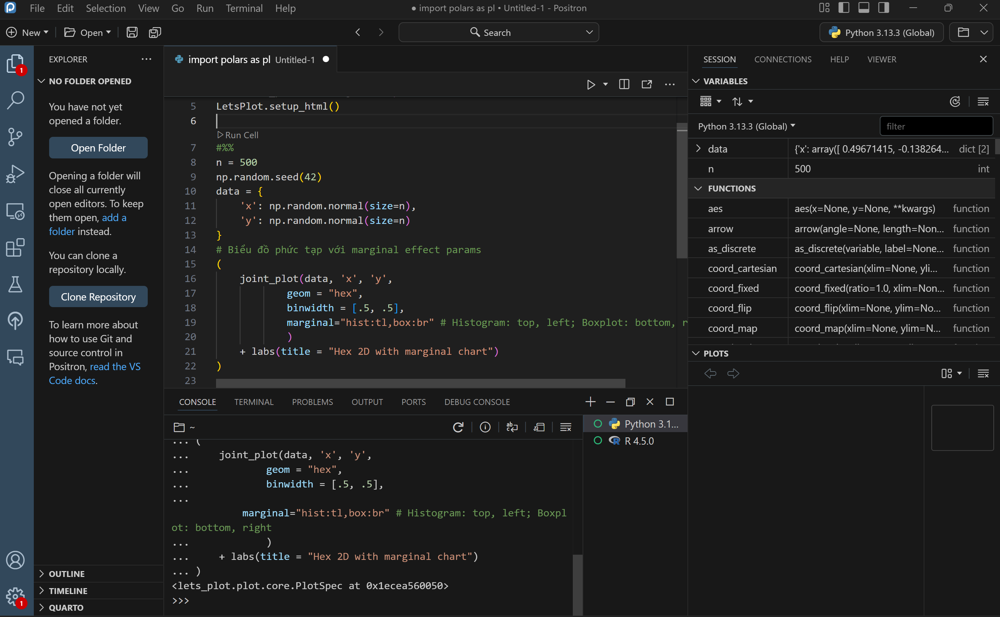
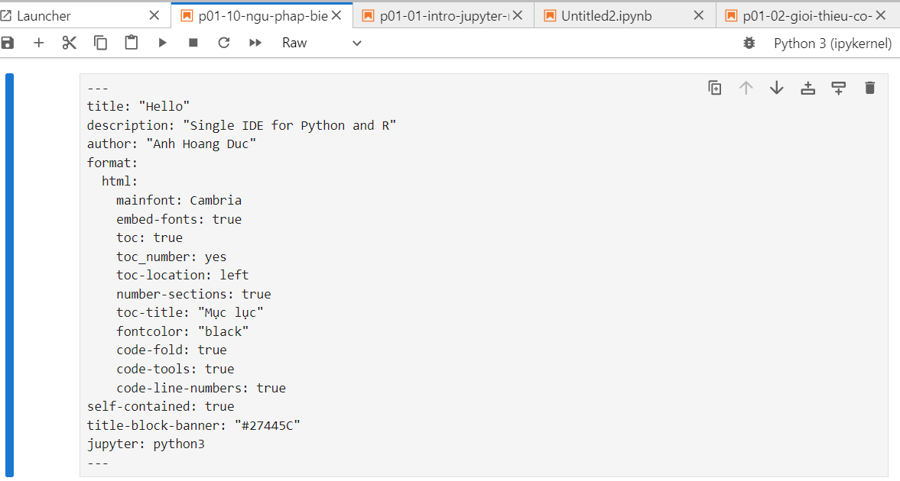
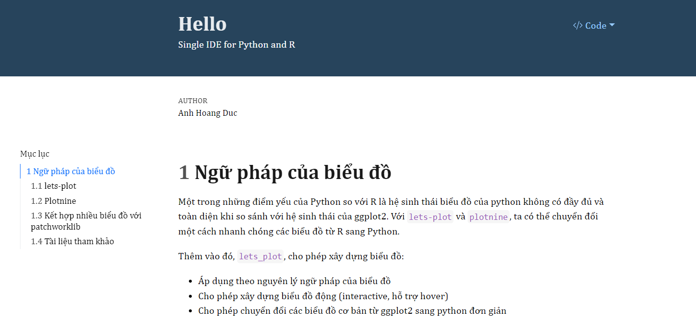

2. Python IDE - Jupyter lab & Visual Studio#
Để làm việc hiệu quả với Python, ta cần làm quen với IDE - Integrated Development Environment - phổ biến cho Python. Có 2 IDE hiệu quả là Jupyter Lab và Visual Studio
2.1. Jupyter lab#
Jupyter Lab là IDE phổ biến nhất cho Python, và là phiên bản nâng cấp của jupyter notebook. Jupyter lab sử dụng browser-based interface, cho phép chúng ta hiển thị code, hình ảnh, bảng biểu... và viết note bằng Markdown - tương tự như RMarkdown. Tiếp tục với sự phát triển của Jupyeter Notebook là jupyter lab.
Cách cài đặt jupyter như sau
pip install jupyterlab
Các phím tắt hay sử dụng trong notebook:
Ctrl + Enter: Chạy codeShift + Enter: Chạy code & chuyển xuống cell dướiEsc + 1,Esc + 2,Esc + M,Esc + R: Chuyển sang markdown, heading, raw - chức năng hiển thị raw phù hợp khi chèn thêm yaml vào notebookEsc + Y: Chuyển về codeEsc + X: Cut codeCtrl + /: Comment/UncommentAlt + Enter: Chạy code & thêm 1 dòng ở phía dướiShift + Enter: Chạy code, move xuống dưới 1 dòng - không tạo cell mớiAlt + Enter: run cell, insert 1 dòng phía dướiUp/ Down: di chuyển lên xuốngEsc: Quay về edit modeEsc + A,Esc + B: Insert cell phía trên/ dướiEnter: edit 1 cellEsc D+D: xóa 1 cell (nhớ tắt tiếng Việt)Esc + Z: undoEsc + S: saveCtrl + Shift + -: Tách 1 cell thành 2 cell từ vị trí đặt con trỏCtrl + Shift + P: Hiển thị các phím tắt:
2.1.1. Cách hiển thị biểu đồ trong jupyer#
Sử dụng option %matplotlib inline với jupyter
# %matplotlib inline
import matplotlib.pyplot as plt
plt.plot([1,2,3,4])
plt.ylabel('some numbers')
plt.show()
2.1.2. Magic commands#
Trong Python có nhóm các câu lệnh được khai báo sẵn được gọi là magic command. Các câu lệnh này cho phép thực hiện nhanh các nhóm lệnh khác.
%lsmagic
Available line magics:
%alias %alias_magic %autoawait %autocall %automagic %autosave %bookmark %cd %clear %cls %code_wrap %colors %conda %config %connect_info %copy %ddir %debug %dhist %dirs %doctest_mode %echo %ed %edit %env %gui %hist %history %killbgscripts %ldir %less %load %load_ext %loadpy %logoff %logon %logstart %logstate %logstop %ls %lsmagic %macro %magic %mamba %matplotlib %micromamba %mkdir %more %notebook %page %pastebin %pdb %pdef %pdoc %pfile %pinfo %pinfo2 %pip %popd %pprint %precision %prun %psearch %psource %pushd %pwd %pycat %pylab %qtconsole %quickref %recall %rehashx %reload_ext %ren %rep %rerun %reset %reset_selective %rmdir %run %save %sc %set_env %store %sx %system %tb %time %timeit %unalias %unload_ext %uv %who %who_ls %whos %xdel %xmode
Available cell magics:
%%! %%HTML %%SVG %%bash %%capture %%cmd %%code_wrap %%debug %%file %%html %%javascript %%js %%latex %%markdown %%perl %%prun %%pypy %%python %%python2 %%python3 %%ruby %%script %%sh %%svg %%sx %%system %%time %%timeit %%writefile
Automagic is ON, % prefix IS NOT needed for line magics.
Các magic command thường dùng
# Project working directory
%pwd
'd:\\01-github\\ds-book-python\\_source'
# Current directory in in Python
%cd
C:\Users\Admin
%ls
Volume in drive C is Windows-SSD
Volume Serial Number is 0A3C-70C9
Directory of C:\Users\Admin
06/03/2025 08:26 PM <DIR> .
04/14/2025 02:58 AM <DIR> ..
04/30/2025 09:52 AM <DIR> .cache
05/06/2025 05:10 AM <DIR> .chocolatey
06/03/2025 08:31 PM <DIR> .cursor
05/01/2025 05:35 PM <DIR> .dbt
05/21/2025 06:27 PM <DIR> .docker
04/13/2025 08:22 PM <DIR> .duckdb
05/01/2025 05:37 PM 188 .gitconfig
04/17/2025 05:21 AM <DIR> .ipython
05/03/2025 05:48 PM <DIR> .matplotlib
05/04/2025 08:56 AM 36 .nodemid
04/30/2025 10:47 AM <DIR> .ollama
04/13/2025 08:22 PM <DIR> .positron
04/20/2025 09:52 PM <DIR> .vscode
04/26/2025 10:46 PM 117 .wslconfig
04/14/2025 02:42 AM <DIR> Contacts
04/13/2025 03:12 PM <DIR> Desktop
06/07/2025 07:37 AM <DIR> Documents
06/07/2025 03:05 PM <DIR> Downloads
04/14/2025 02:42 AM <DIR> Favorites
04/14/2025 02:42 AM <DIR> Links
04/14/2025 02:42 AM <DIR> Music
04/30/2025 09:51 AM <DIR> npm-cache
04/14/2025 02:43 AM <DIR> OneDrive
05/05/2025 05:47 AM <DIR> Pictures
04/14/2025 02:42 AM <DIR> Saved Games
04/14/2025 02:46 AM <DIR> Searches
05/23/2025 10:46 AM <DIR> Videos
3 File(s) 341 bytes
26 Dir(s) 136,196,231,168 bytes free
2.1.3. Viết công thức toán#
Ta có thể viết công thức toán như rmarkdown thông thường.
Ví dụ: Kết quả hiển thị của công thức $$\theta = \sum_{i=1}^{n}X_{i}$$ như sau
2.1.4. Cài đặt extension cho phép quản lý jupyter tốt hơn#
conda install -c conda-forge jupyter_contrib_nbextensions jupyter_nbextensions_configurator
pip install jupyter_contrib_nbextensions jupyter_nbextensions_configurator
2.2. Visual Studio#
Bên cạnh Jupyter Lab, ta có thể sử dụng Visual Studio làm IDE cho Python. Download Visual Studio tại đường link dưới đây
https://code.visualstudio.com/download
Visual Studio cho phép cài đặt rất nhiều công cụ bổ trợ (extension) để thực hiện phân tích dữ liệu với Python. Giao diện của Visual Studio như sau

Trong cấu trúc của Visual Studio, có các cấu phần quan trọng sau:
Explorer:Tên folder đang làm việc: Hiển thị các file trong thư mục gốcOutline: TOC của file notebook đang làm việc
Notebook: Phần làm việc với notebook chínhVariables: Cho phép hiển thị các chức năng mở rộng trong notebook/file .py:Terminal: Cho phép sử dụng như console với interactive codingJupyter: Cho phép hiển thị các variables, objects trong notebook
Lưu ý: Các module, function khi load từ python cũng sẽ được hiển thị tại đây
Các tips khi sử dụng Visual Studio:
# %%%: Cho phép chạy code tương tự như các cell trong notebook (nên dùng). Khi sử dụng cách này, các file.pycó thể tương tác và sử dụng dễ dàng thay vì phải chọn và chạy bằng phímShift + Enter
2.3. Positron#
Positron là IDE mới được phát triển từ 2024 của Rstudio với mục tiêu phát triển IDE duy nhất cho cả R & PYthon. Positron được phát triển trên nền của Visual Studio và được kế thừa các ưu việt của cả Visual Studio và Rstudio trong lĩnh vực data science.
Cho phép chạy code theo từng dòng
Thiết kế trên cùng 1 UI toàn bộ các objects & variables cho Python
Tuy nhiên, Positron tại thời đểm 6/2025 vẫn đang ở bản beta, phải cần thêm 1 thời gian để đạt đến mức độ ổn định. Giao diện của Positron như sau

2.4. Các thư viện khác#
2.4.1. Quarto#
Tương tự như R, quarto có thể sử dụng cùng .ipynb. Khi đặt heading của quarto phần đầu của notebook, ta chọn cell ở chế độ raw. Code yaml cho jupyter notebook có thể sử dụng như sau:
title: "Analysis of customer using Fex Card"
description: "Single IDE for Python and R"
author: "Analytics member (author@email.com.vn)"
date: today()
format:
html:
mainfont: Cambria
embed-fonts: true
toc: true
toc_number: yes
toc-location: left
number-sections: true
toc-title: "Mục lục"
fontcolor: "black"
code-fold: true
code-tools: true
code-line-numbers: true
execute:
warning: false
message: false
self-contained: true
title-block-banner: "#27445C"
fig-format: svg
jupyter: python3

Để export file .ipynb thành html, ta dùng cmd như sau
quarto render notebook.ipynb
Kết quả render ra file html như sau

Như vậy, khi ta dùng kết hợp notebook và export ra quarto, ta có thể sử dụng đồng nhất kết quả đầu ra của cả 2 ngôn ngữ R & Python
2.4.2. Sphinx#
Mặc dù jupyter notebook là công cụ hữu hiệu để phân tích dữ liệu với Python, jupyter lại chưa phải là công cụ hữu hiệu để viết lại các document thành hệ thống. Để viết hiệu quả, ta cần dùng sphinx
# Cài đặt sphinx
pip install sphinx
# Cài đặt template
pip install sphinx_rtd_theme
# Cài đặt notebook for sphinx
pip install nbsphinx
conda install -c conda-forge nbsphinx
Sau khi cài đặt xong, ta có thể tạo 1 project mới như sau
sphinx-quickstart
Các file notebook cần được liệt kê trong file index.rst
Sau khi set-up xong, toàn ta có thể run toàn bộ project như sau
sphinx-build source_foder output_folder
sphinx-build _source _build/html